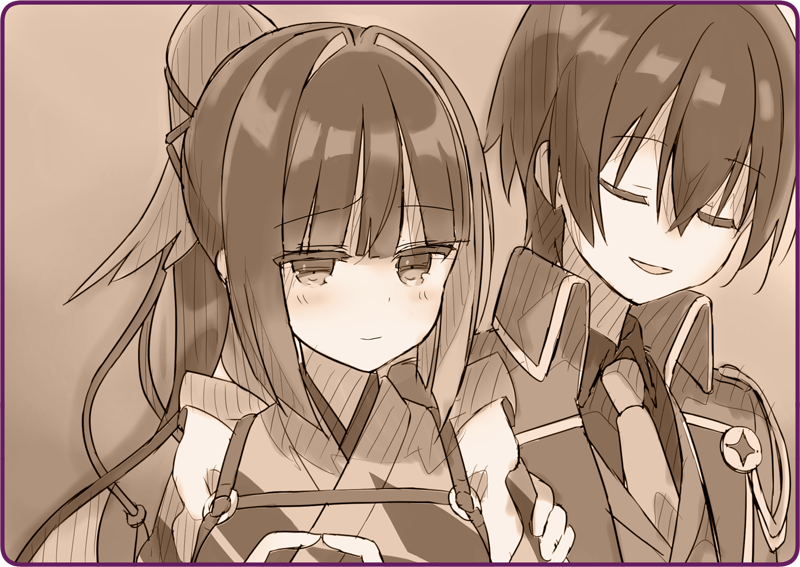

後ろから農作業用の
機械人形を押していく。地面が一部凍っていたのは幸いだった。それほど大きな力をかけなくても滑るように進んでくれる。
女の子「お姉ちゃん、本当に大丈夫？」
機械人形の体躯の上に腰かけながら、背後を気にしている。
蒸気を噴き出しながらも、笑顔を向ける。
女の子「……ローサ」
ローサ「バラの花から取ったって。その……お姉ちゃんは？」
一瞬戸惑うが、やがて顔を上げた。
ローサ「ぷっ」
説明しようとすると、彼女は吹き出した。
ローサ「鴉ぐらい知ってる。変な名前……」
＊ ＊ ＊
ナギ「古い燃料がタンクの中で固まっているんだよ」
機械人形を押して、やがて邸宅に戻る。
ナギさんは特段驚くでもなく、どこか興味深そうに機械人形を観察すると、事情を二、三割聞いただけで修理を始めていた。
ナギ「それで燃焼不良を起こしているんだな。冬に入る前に燃料は抜かなければいけないよ」
倉庫の中、工具を手にしばらくハッチの中を弄って、すぐに問題に検討を付けていた。
ローサ「毎年ちゃんとやっているはずだけど……」
ナギ「念入りにしたほうがいいさ。最近の燃料は不純物が多いからね」
ローサ「それは、皇国がいい燃料をみんな持っていくからよ」
ナギ「ははは、違いない」
なにやら薬品を持ってきて、タンクを洗浄しようとしている。
乾いたばかりの制服がさっそく汚れてしまいそうだが、また洗えばいいかと思った。
ローサ「お姉ちゃんたちは、不思議」
ローサ「東邦人なのにいばってない」
ナギ「軍人は特に偉そうだろ」
ローサ「うん」
ナギ「ボクは元々技術者なんだ。人形の研究をしていたんだよ。それがこういう情勢になっちゃって、赤紙一枚で異国まで飛ばされたってわけさ」
ローサ「だから、メイド人形を持ってる？」
ナギ「ああ、彼女はみんなの役に立つ自律人形なのさ」
ナギ「そうだろ？」
なんともその言葉の意味が飲み込めなくて、鴉羽は言葉を濁した。
＊ ＊ ＊
ローサ「すごい、すごい」
軽快に煙を吹き出す機械人形。
その背中に跨がりながら、ローサは嬉しそうに笑った。
始めてしまえば、修理はあっという間だった。
ナギ「何度も命令を送ったから、論理機関に負荷がかかっているようだね。しばらくは起動に時間がかかるだろうが、気長にね」
ローサ「交換したほうがいい？」
ナギ「論理機関には修復機能があるから、時間が経てば直るんだ。でも無理させすぎると治らなくなるからね。大切に扱ってあげて」
ローサ「わかった」
ローサ「うん……ありがとう！」
手を振りながら、彼女と機械人形は去っていった。
ナギ「お手柄だったね」
ナギ「いいや、誰にでもできることじゃないさ」

ぽんぽん、と肩を叩いてくれる。
照れくさいような、居心地が悪いような、なんとも妙な気持ちだった。
そんな気持ちを払おうと、質問を投げかけた。
街道で動作不良を起こした機械人形を見かけたときのこと。問題を探ろうと論理機関を繋げようと思ったのだが、灼けつくような感覚と共に遮断されていた。
ナギ「すまない、ちゃんと言っておくべきだったね」
すこしばつが悪そうに、マスターは頭を掻いた。
ナギ「それが一番の故障なんだ。キミの論理機関は壊れているんだ」
目の前が真っ暗になる気持ちだった。
義体が変わることなど、些末な問題だった。
ナギ「当然、そういうことになる」
ナギ「いっただろう、論理機関には自己修復機能がある。時間をかけて修復すれば、あるいは」
ナギ「分からない。一年か、二年か……あるいはもっと」
ナギ「でも、考え方だと思うんだ」
あたしの声色があまりに気落ちしているからか、明るい声でナギさんは笑った。
ナギ「指揮だけが人形の役目じゃない。キミは戦闘以外でも人の役に……」
しかし、それは余計に傷口をえぐる言葉だ。
ぽろりと瞳から冷却液がこぼれるのが分かった。
感情を制御できていない証だ。
ナギ「鴉羽、落ち着いて」
必死に堪えようとするが、逆効果だった。
せめて情けない顔を見せたくないと、顔を伏せて、あたしは肩を震わせた。
ナギ「………」
マスターはそんなあたしの肩を、無言でじっと撫で続けてくれた。

 「よいっ……っしょっ……」
「よいっ……っしょっ……」